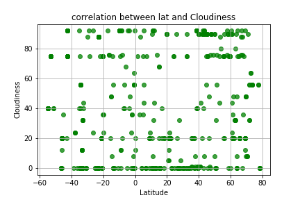

The purpose of this project was to analyze how weather changes as you get closer to the equator. To accomplish this analysis, we first pulled data from the OpenWeatherMap API to assemble a dataset on over 500 cities. 
After assembling the dataset, we used Matplotlib to plot various graphs to see the trends.